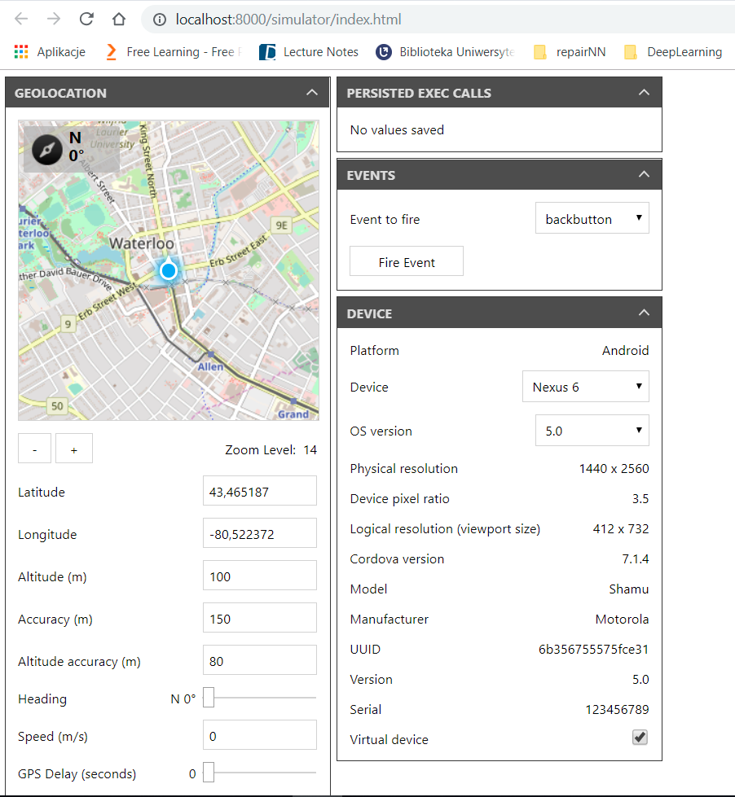

Genius
The testing and deployment of Cordova application is not a sophisticated task. At first we can always use a browser platform. In this way we can easily test most of the applications, and using chrome and its developer tools we can test most functionalities of our application. When the developer thinks about more sophisticated issues he/she can always use ripple simulator. For that we just need to install the simulator using npm:
npm install -g cordova-simulate
and after that we need to run inside the project folder the command:
cordova platform add android simulate android
or for iOS simulation
cordova platform add ios simulate ios
In that case in the browser opens two pages, one for our application and in next tab the control panel of the emulator, here we can set all properties of the simulated environment.

When developer need to test on real device, the application have to be build for appropriate platform. For android the commands are:
cordova platform add android cordova build android
This operation require to configure android SDK (android studio) This operation require to configure android SDK (android studio)
The exemplary output can look like this:
After a rather long output we should see the information that our apk file was created:
BUILD SUCCESSFUL in 3m 26s 48 actionable tasks: 48 executed Built the following apk(s): D:UsersKrzysztof PodlaskiDocumentsUniwerekGENIUSdidactic_coursesCordova_mobile_gamescodeUIExamplesplatformsandroidappbuildoutputsapkdebugapp-debug.apk
Copyright Genius.